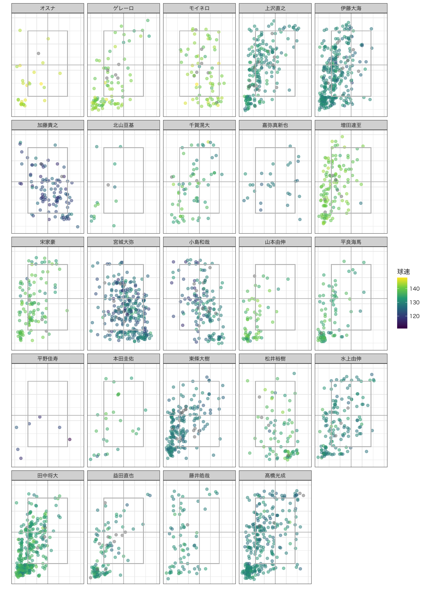
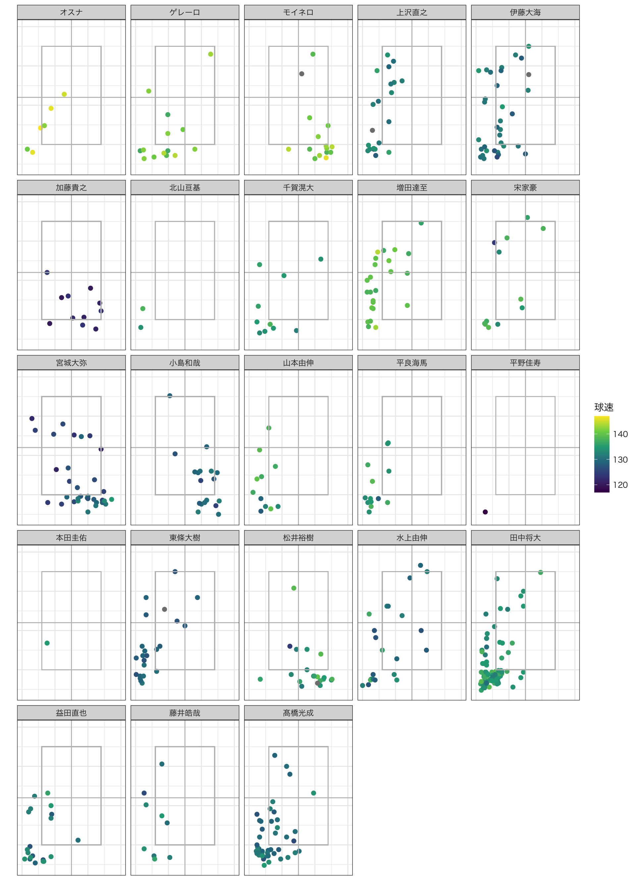
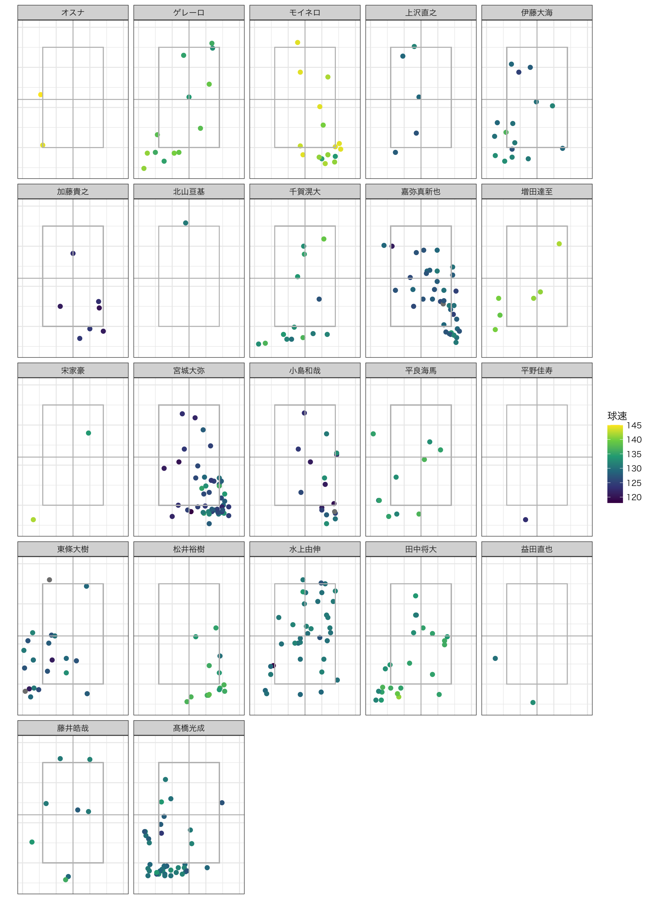
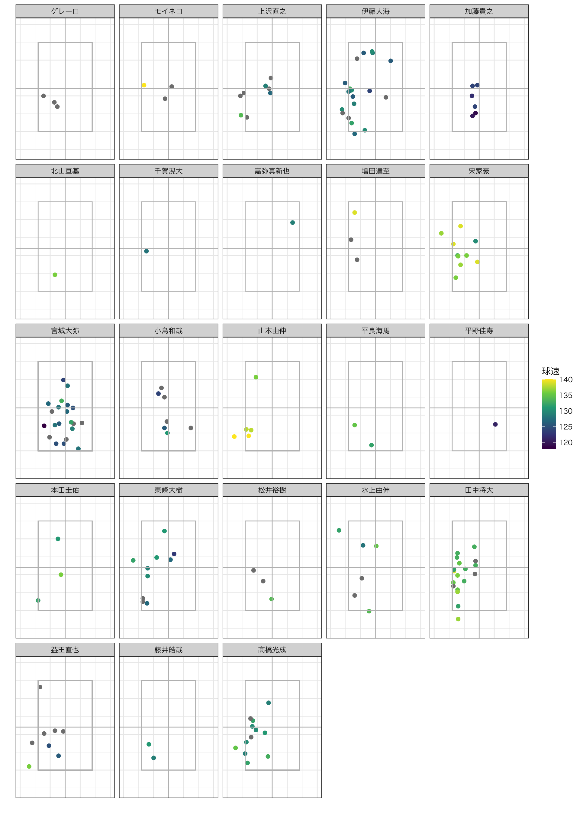
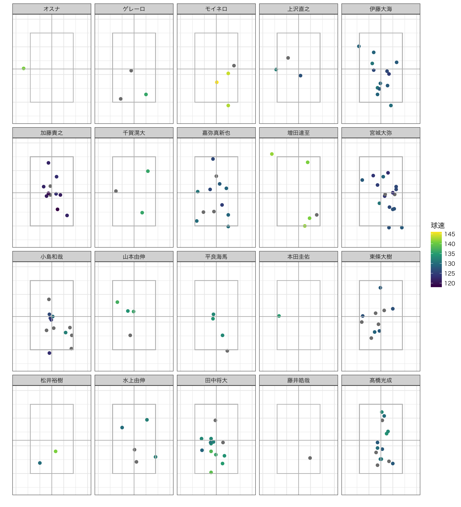

2022 パ・リーグ投手-スライダー 投球結果
| 単打 | 長打 | 本塁打 | 空振り | 見逃し | 内野ゴ | 内野直 | 内野飛 | 外野飛 | ファウル | ボール | 失出塁 | 振逃 | 犠打 | 球数合計 | |
|---|---|---|---|---|---|---|---|---|---|---|---|---|---|---|---|
| 119km以下 | 1 | 3 | 0 | 3 | 56 | 1 | 0 | 3 | 6 | 10 | 32 | 0 | 0 | 0 | 115 |
| 120km台 | 70 | 19 | 6 | 252 | 650 | 96 | 7 | 31 | 78 | 353 | 905 | 3 | 0 | 4 | 2474 |
| 130km台 | 72 | 23 | 10 | 464 | 547 | 138 | 12 | 54 | 103 | 446 | 1117 | 5 | 1 | 7 | 2999 |
| 140km台 | 11 | 1 | 0 | 73 | 72 | 36 | 1 | 6 | 12 | 89 | 142 | 0 | 0 | 0 | 443 |
| NA | 59 | 11 | 6 | 9 | 15 | 55 | 2 | 9 | 23 | 42 | 26 | 4 | 0 | 3 | 264 |
| 単打 | 長打 | 本塁打 | 空振り | 見逃し | 内野ゴ | 内野直 | 内野飛 | 外野飛 | ファウル | ボール | 失出塁 | 振逃 | 犠打 | |
|---|---|---|---|---|---|---|---|---|---|---|---|---|---|---|
| 119km以下 | 0.87 | 2.61 | 0.00 | 2.61 | 48.70 | 0.87 | 0.00 | 2.61 | 5.22 | 8.70 | 27.83 | 0.00 | 0.00 | 0.00 |
| 120km台 | 2.83 | 0.77 | 0.24 | 10.19 | 26.27 | 3.88 | 0.28 | 1.25 | 3.15 | 14.27 | 36.58 | 0.12 | 0.00 | 0.16 |
| 130km台 | 2.40 | 0.77 | 0.33 | 15.47 | 18.24 | 4.60 | 0.40 | 1.80 | 3.43 | 14.87 | 37.25 | 0.17 | 0.03 | 0.23 |
| 140km台 | 2.48 | 0.23 | 0.00 | 16.48 | 16.25 | 8.13 | 0.23 | 1.35 | 2.71 | 20.09 | 32.05 | 0.00 | 0.00 | 0.00 |
| NA | 22.35 | 4.17 | 2.27 | 3.41 | 5.68 | 20.83 | 0.76 | 3.41 | 8.71 | 15.91 | 9.85 | 1.52 | 0.00 | 1.14 |
rows
投手別 (swing,speed) (対右打者)
rows
投手別 (swing,speed) (対左打者)
rows
投手別 投球結果 (対右打者)
rows
投手別 投球結果 (対左打者)
rows
投手別 結果球(対右打者)
rows
投手別 結果球(対左打者)
columns
球速/コース (対右打者)

球速/コース (対左打者)

Column
投球データ(対右打者 swstr)

投球データ(対左打者 swstr)

Column
投球データ(対右打者 被安打)

投球データ(対左打者 被安打)
